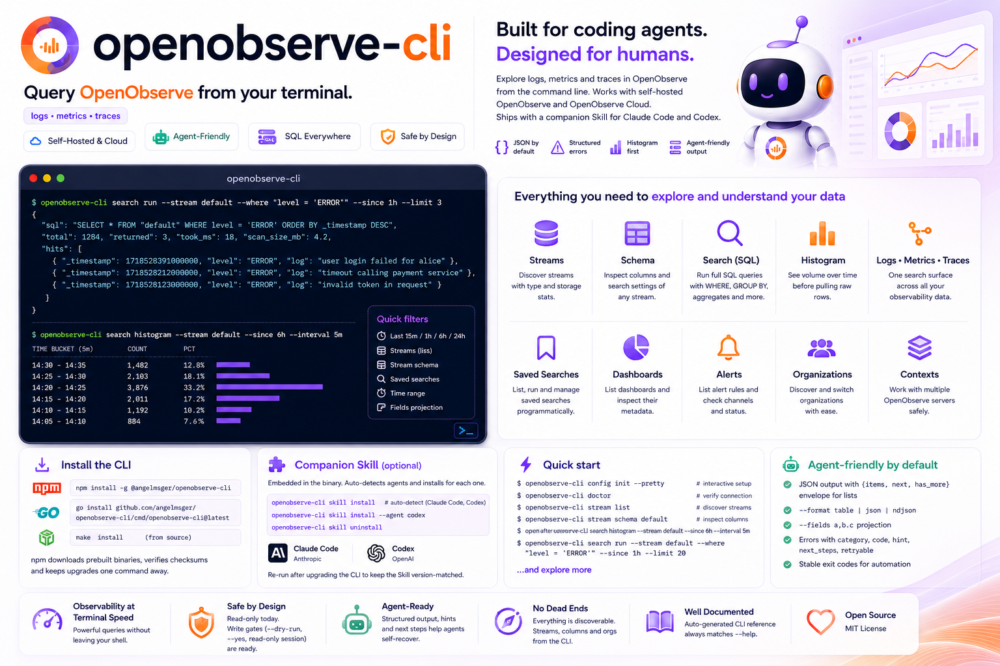

Query OpenObserve from your terminal — built for coding agents, designed for humans.

Discover streams and search logs, metrics and traces — with output a coding agent can act on.
Run full SQL over any stream — WHERE, GROUP BY, aggregates — built from --stream/--where or your own --sql; or search tail to follow it live.
Query metrics with PromQL — metrics query / query-range — and reassemble a trace into a span waterfall with trace get.
search histogram shows volume per time bucket, and trace search surfaces recent traces, so an agent sees the shape before pulling raw rows.
List streams and inspect a stream's schema and full-text-search keys — so your SQL only ever references real names.
Pass --since 1h or --from/--to as RFC3339, a date, an epoch, or now-30m — the CLI converts to the microseconds the API needs.
JSON by default, with structured errors — categories, exit codes and recovery next_steps a coding agent can branch on.
kubectl-style named contexts in one config file. Switch the current server, or override per command with --use-context.
Passwords and tokens live in the OS keychain, with a 0600 file fallback — never in the config file. Env vars for headless use.
Works behind dex / Authentik / Okta SSO via a Service Account token, and gives RBAC-aware guidance when a 403 means a missing role.
Install with npm, then finish setup in two steps — deploy the Skill, then turn on shell completion.
# recommended — fetches the prebuilt binary for your platform
npm install -g @angelmsger/openobserve-cli
Other methods — go install, a source build, or a prebuilt binary from the
Releases page — are in the
README.
Then finish setup:
An openobserve Skill is embedded in the binary. It detects your coding agent — Claude Code, Codex — and installs for each:
$ openobserve-cli skill installCompletes subcommands and flag values. Load it once:
$ source <(openobserve-cli completion bash)Set up a server, discover streams, then search — map first, then rows.
# interactive setup, then verify connectivity $ openobserve-cli config init --pretty $ openobserve-cli doctor # discover streams, then inspect one's columns $ openobserve-cli stream list $ openobserve-cli stream schema default # see volume over time, then pull the rows behind a spike $ openobserve-cli search histogram --stream default --since 6h --interval 5m $ openobserve-cli search run --stream default \ --where "level = 'ERROR'" --since 1h --limit 20 # metrics with PromQL, and a trace's span waterfall $ openobserve-cli metrics query-range --query 'sum(rate(http_requests_total[5m]))' --since 1h --step 1m $ openobserve-cli trace get <trace_id> --stream default --since 1h
Nine command groups, organised <noun> <verb>. Every flag and example lives in the README and the companion Skill.
List organizations and set the default one.
streamDiscover streams; inspect schema, settings and stats.
searchSQL run, histogram and live tail over any stream.
PromQL query and query-range over metrics.
search recent traces; get a trace's span waterfall.
Log in, check identity and log out.
configSetup wizard, plus multi-server context management.
doctorDiagnose configuration, credentials and connectivity.
skillDeploy the embedded companion Skill to your agents.
Longer-form documentation, rendered on GitHub.
Every install method, shell completion, deploying the Skill, and configuration.
Architecture, the API client and error model, config resolution and rendering.
How releases are cut and published to GitHub and npm.
The openobserve Skill that teaches a coding agent the CLI.